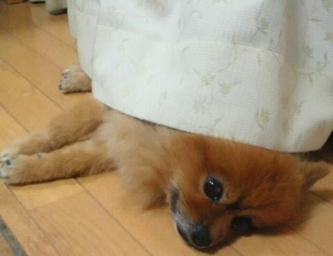
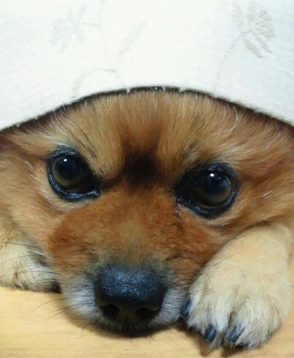

| 2013/05 16 Thu | 川村真洋 5月5日 サスケ天国 へ... ろってぃ− |
ろってぃ−です(^^)
東京プリンシパル公演期間中に
サスケが天国へ行きました。
昨晩 お母さんから聞きました.
大好きだったサスケ...
初めて自分で書いたのは
サスケへの曲だった.
向日葵の様な笑顔で
タンポポの様な体で‥
息を引きとったのは
まひろが初めて役に
選ばれた日。
夜お母さんに
「今日沢村役に選ばれたよー(>∨<)」
って電話をかけた後...
サスケは病気でした。
腎臓が機能してなくて
舌も腐りかけ
ずっと 吐き気におそわれている
状態でした。
5 / 5
夜 お母さんの携帯に電話がなった時
今まで電話がなっても
反応しないぐったりしたサスケが
突然「パッ!」と反応したみたいです。
そして電話に出ると、
まひろからで
「今日やっと沢村役になれたぁーーー\(^ ^)/」ってゆう
喜びの電話やったらしいです。
喜んだ後、
お母さんとお父さんに
「サスケの名前呼んだって...」
って言われて
サスケがやばい状態に
なってることは感づいたので
電話ごしに
「サスケーサスケーサ〜ス〜ケ〜♪」って
元気な声で呼びました^^
そしたら ずっと
ぐったりしていたサスケが
「がっ!」と目を開いて
まひろの声を聞いていたみたいです
ちゃんと聞いてくれてたんだね
サスケっ.
電話を切った後も
サスケはずっと頑張って頑張って
たえていたみたいです。
そして
いつもバイトで帰りの遅い
お姉ちゃんが帰ってきて
「ただいま〜」って言って
リビングに入ってきてすぐ
サスケはお姉ちゃんの顔を見て
そのまま息を引き取った様です...
お母さん,お父さんの顔を見て
まひろの声もちゃんと聞いて
お姉ちゃんの顔も見て
安心してサスケは息を引き取りました。
サスケは その日
まひろから電話がくることを
知っていたのかな ?
どうして まひろからって
分かったんだろう？
サスケはまひろが7歳の頃から
かいはじめました。
10年の命だったけど
十分 サスケにはたっくさんの
元気をもらいました。
サスケとの思い出はいっぱい(^^)
学校で嫌なことがあっても
周りの人間が何も
分かってくれない時も
サスケだけは助けてくれた。
泣いてたらすぐ近寄ってきて
心配そうな顔して
めっちゃペロペロなめてきて
なぐさめてくれた。
サスケの前で
平気なふりしても
目を『じぃーっ』と見て
まひろの心をすぐ読み取った。
小学生の頃
毎年 たこ上げの時季なると
家族で公園に
凧上げをしに行って
サスケも連れてって
一緒に走りまくった。
その時の サスケの顔は
今でも忘れられない...
サスケは見た目によらず
すっっっごい怖がりで
自分より小さいチワワにも
こわがってた^^
でも 走るスピードは
大型犬にも負けてなかった^^
黒ラブにおいかけられた時
にげきって 胸に飛び込んできた。
臆病者でこわがりでも
本当に本当に...
まひろにとっては最高の
パートナーだった。
サスケは ヒマワリに囲まれて
天国に行ったって
お母さんが言ってました。
ヒマワリに囲まれたサスケの
写真を送ってもらいました...
今ごろヒマワリ畑で
元気に走ってるはず(^∨^)
最後にサスケの顔を見たのは
3月入ってすぐの頃 、
大阪に帰った時でした...
今まで本当にありがとう !
大好きやったよ...
絶対に夢叶えるから
天国から見とってねサスケ(*^∨^*)

